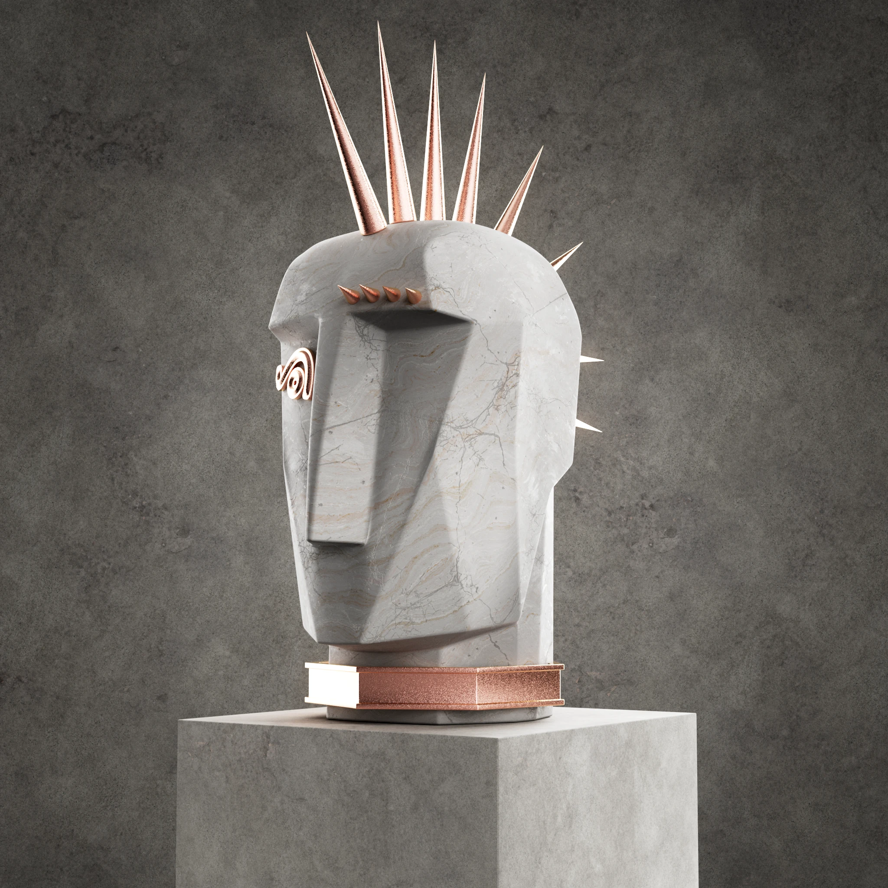

Kelly Wearstler
Ten thousand heads grown from a single set of rules — no two of them alike, and every one unmistakably from the same family.

Ten thousand heads grown from a single set of rules — no two of them alike, and every one unmistakably from the same family.